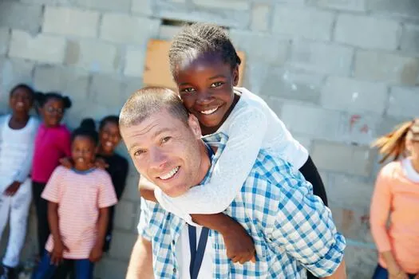
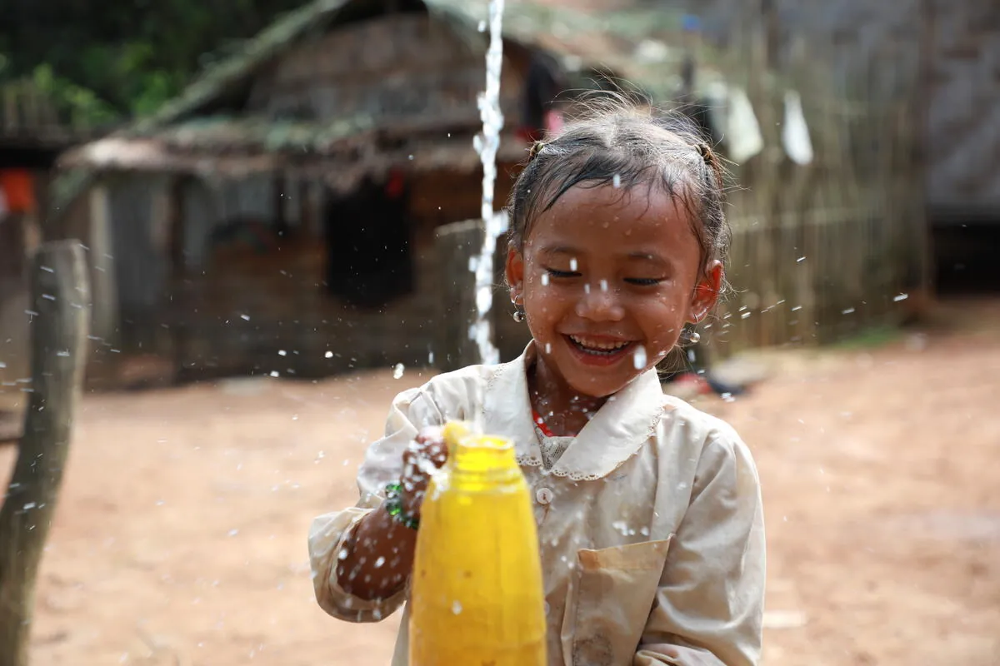

Leadership
Meet the Team

A decade of small acts that added up to something extraordinary.
In the winter of 2014, eight colleagues spent a Sunday cooking and serving meals to people sleeping on Delhi's pavements. They expected to feel good for a day. Instead, they couldn't stop thinking about the children they met — bright, curious kids with no school to go to.
That restlessness became STACKLY. Today we're a registered NGO running education centers, mobile health camps, plantation drives and community kitchens across 12 states — powered entirely by small acts from ordinary people.


To unlock opportunity for the most underserved — through education, healthcare, environmental restoration and community-led development — powered by millions of small acts of generosity.
A world where every child learns, every family thrives, and every community lives in dignity within a healthy planet — a world where no one is left behind.
Every child deserves a classroom
We lead with empathy, always
Transparent to the last rupee
Solutions that outlive us
Change is a team sport
We show up where it's hard